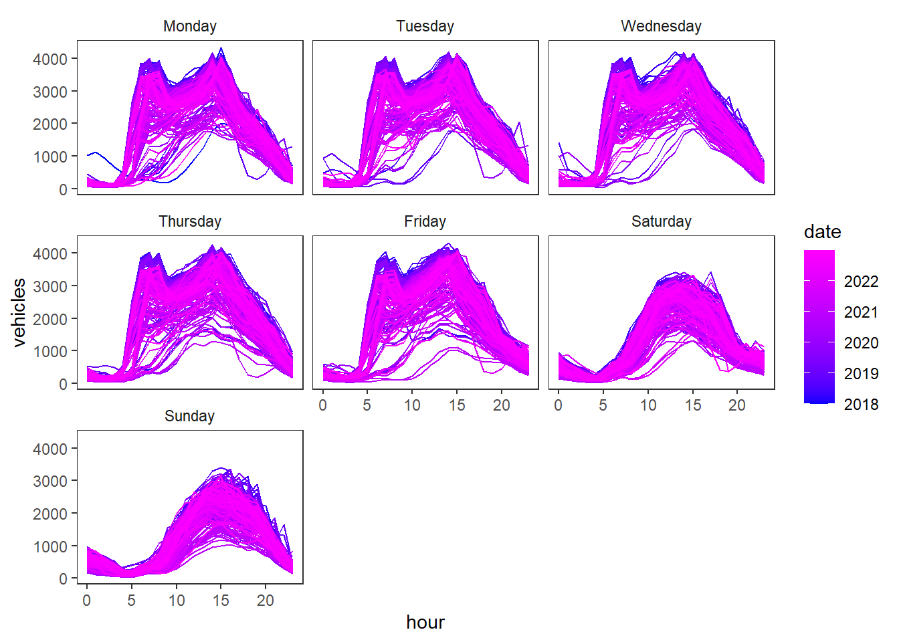

danmarksplass <- readr::read_csv(
"https://raw.githubusercontent.com/holleland/BAN430/master/data/traffic_danmarksplass.csv")WS1: Bergen traffic forecast
Introduction
In this workshop we will build a model for forecasting traffic in Bergen’s busiest intersection Danmarksplass. The data is publicly available at vegvesen.no/trafikkdata and published by The Norwegian Public Roads Administration. Forecasting traffic amount could be useful for anyone wanting to avoid traffic jams, but also important for government agencies with responsibilities related to road planning or public transport.
As you may imagine the amount of traffic varies depending on things such as time of day, which day of the week it is and public holidays. The peak hours are mostly associated with people traveling to or home from work, while the least busy hours will be in the middle of the night. In this exercise you will use raw observations from The Norwegian Public Roads Administration to forecast traffic passing through one of Bergen’s traffic bottlenecks.
Hopefully you will learn about
- Graphical presentation of a time series
- Building a linear time series regression model
- Useful transformations
- Using dummy variables for seasonality
- Using fourier sequences for seasonality
- External predictor variables
Data description
The data you will be using consists of the two columns
- datetime: date and hour of observation
- vehicles: the number of vehicles that has passed a sensor in the road the previous hour
The observations are hourly and start from January 2018 to February 1st 2023 and are all from Danmarksplass (near the charging station). We add another location as predictor for Danmarksplass later in the case study to see if this may inform our forecasting model, but this data has the same structure (except that the vehicle column has a different name).
Exercises
- Load the data into your working environment. Make sure the columns are correctly formatted.
- Convert the data to a tsibble and make a time plot.
- Create a training data set. We will use January 2023 as our test set. Make a time plot with one panel per year for the training data. Can you detect any particular patterns or deviations from the patterns?
Code hint:
train <- danmarksplass %>% filter(year(datetime) < 2023)Using different graphics, visualize the training data. Look for trends and seasons on multiple scales.
In particular, create this graphic. What do you detect here?
Code solution:
train %>% mutate(wday = wday(datetime, label =T, abbr = FALSE, week_start=1),
hour = hour(datetime),
date=date(datetime)) %>%
ggplot(aes(x = hour, y = vehicles, col = date, group = date)) + geom_line() +
facet_wrap( ~ wday)+ scale_color_date(low = "blue", high = "magenta")
- Aggregate the data to total traffic by year-week and do a STL decomposition. Do you have an plausible explanation for the estimated trend? Try reducing the trend window (default is 91).
Code hint:
train %>%
index_by(date = ~yearweek(.)) %>%
summarize(vehicles = sum(vehicles,na.rm=T))%>%
model(stl = STL(vehicles ~ trend(window =91))- Fit a TSLM with weekly season as predictor (dummy variables for every hour of the week). Fit one model without transforming and one where you log-transform the forecast variable. Forecast for the first week of 2023 and plot it for the two models. Would you prefer to use the log-transform or no transform? Explain why.
Code hint
log(vehicle) ~ season(period = "week")- In the model above, we used 24\cdot 7= 168 predictors. We can do this, because we have so many data points. However, could we achieve something similar by using a fourier series? If K<168/2 = 84, this will reduce the number of parameters. Use the same transformation as you favored above and compare the model with a model using fourier predictors for the weekly season. Try different values of K and forecast for the first week of 2023. Evaluate the accuracy of the two models with AIC, AICc and CV.
Code hint:
vehicles ~ fourier(K = 65, period = "week")Based on the number of observations here (T\approx 45\,000), which of AIC, AICc or CV would you prefer to use and why?
One issue you might see is that the model over-estimates the traffic on January 1st (which in 2023 is a Sunday, but it is also a public holiday). Could there be a public holiday effect? By loading the csv linked below, you will have a list of Norwegian holidays from 2008-Jan 2023. Add a dummy variable to your model of choice for public holiday (1 if holiday, 0 otherwise). Does this improve the model fit measures (AIC)?
holidays <- read_csv(
"https://raw.githubusercontent.com/holleland/BAN430/master/data/NorwegianHolidays_2008-jan2023.csv")$xCode hint:
holiday <- readr::read_csv(
"https://raw.githubusercontent.com/holleland/BAN430/master/data/NorwegianHolidays_2008-jan2023.csv")$x
danmarksplass <- danmarksplass %>% mutate(
holiday = factor(ifelse(date(datetime) %in% holidays, 1, 0))
)
train <- danmarksplass %>% filter(year(datetime) < 2023)
train %>%
model(holiday = TSLM(log(vehicle) ~ factor(holiday) + ...))Are there other dummies you could think of adding? Special events that might impact the traffic on a certain day or during a period (spike dummy) or permanently changing it from a certain point in time (step dummy)? Discuss.
Fit a seasonal naive as benchmark model and compare it to the best model so far using RMSE, MAE, MAPE and MASE on the test set.
Code hint:
fit <- model(
m1 = ...,
snaive = SNAIVE(...)
)
accuracy(fit)- One hypothesis is that some of the traffic at Danmarkplass can be explained by the arrival of ferries at Halhjem, creating a peak in the number of cars arriving. This will only contribute to the traffic heading North, but let us test by adding a predictor for traffic at Moberg v/Lekven (a station on the E39 immediately after the ferry). We will only use traffic towards Bergen here. The traffic heading North at Moberg can be found in traffic_moberg.csv (link below). Join it with the danmarksplass data (one tsibble with both columns). At Moberg there are some zero measurement. It may be useful to use log(1+moberg). Since it takes some time to drive from Moberg to Danmarksplass it may also be useful to use lagged observations at Moberg (hint: Use lag() function). Evaluate whether adding Moberg improves AIC.
moberg <- readr::read_csv("https://raw.githubusercontent.com/holleland/BAN430/master/data/traffic_moberg.csv") Code hint:
danmarksplass <- left_join(danmarksplass,
moberg,
by = "datetime")
train <- danmarksplass %>% filter(year(datetime) < 2023)
train %>%
model(holiday = TSLM(log(vehicle) ~ lag(log(1+moberg)) + factor(holiday) + ...))The way you have implemented the Moberg traffic in your forecast model, is it an ex ante or ex post forecast?
Let us have a look at the residuals. Comment on potential issues.
Increase the forecast interval to include all of January 2023. Does this change any of the conclusions about the models? How does the forecast look?
Can you think of other predictors to add to the model. Can you improve the model performance further?